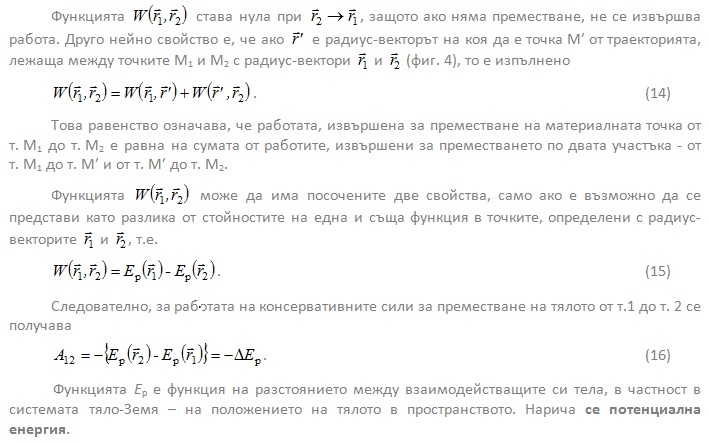

ТЕОРИЯ
-
Механична работа. Мощност
Изменението на механичното състояние на едно тяло е резултат от взаимодействието му с други тела. За да се характеризира количествено процесът на обмен на енергия между взаимодействащи си тела, се въвежда понятието механична работа.
Нека под действието на сила дадено тяло извършва елементарно преместване . Силата сключва ъгъл с вектора на преместването. Елементарната работа, която е извършена от силата, се дефинира чрез скаларното произведениеЗа да се намери работата при преместване на тялото за голям участък от траекторията – на фиг. 1 от положение 1 до положение 2, е необходимо да се сумират елементарните работи за целия участък
представлява компонентата на силата, която лежи по направлението на преместването, следователно

За решаването на този интеграл трябва да се познава зависимостта Fr (r) (фиг. 2). От уравнение (3) следва, че работата, извършена от силата в участъка 1-2 е равна на защрихованата площ, затворена между кривата Fr (r) и абсцисата r в участъка 12. Това е графичен метод за определяне на големината на работата.
Ако тялото се движи праволинейно, преместването dr е равно на изминатия път ds. В случая
на постоянна сила и a = const решението на (3.2) е

Работата е положителна, когато силата сключва остър ъгъл с преместването, и отрицателна при . От това следва, че силите на съпротивление винаги извършват отрицателна работа. Сила, която е перпендикулярна на преместването не извършва работа (А = 0). Такива сили са: реакцията на опората, силата на тежестта при движение на тяло по хоризонтална повърхност и др. В SI мерната единица за механична работа е джаул (J), като 1J = 1 N.m.
Физичната величина мощност характеризира скоростта, с която се извършва работата
Това е моментната стойност на мощността. Измерва се във ватове (W) – 1W = 1J/s. Средната мощност за произволен интервал от време (делта)t се дефинира като отношение на работата А, извършена от конкретната сила, и интервала (делта)t .
От (5) се извежда връзка между мощността и силата
Мощността Р, както и работата А, са скаларни величини.
-
-
Кинетична и потенциална енергия
- кинетична енергия на постъпателното движение
Енергията е универсална количествена мярка за движението и взаимодействието между телата. С различните форми на движение на материята се свързват и различните форми на енергията: механична, топлинна, електромагнитна, ядрена и др.
Нека материална точка с маса m се движи по оста х под действие на сила F = const, както е показано на фиг. 3. Силата F придава на материалната точка ускорение

В началния момент t0 = 0 материалната точка има координата х0 и скорост V0, а в момента t – координата х и скорост V . Законът за движение на частицата е
Времето t може да се изрази от закона за скоростта V = V0+at:
и след заместване в (7) се получава
Пътят, изминат от материалната точка, за интервал от време (t - t0), е s = x - x0. Следователно е работата А, извършена от силата F върху материалната точка за този интервал от време. Така (8) се преобразува до
се нарича кинетична енергия на материалната точка. Тя зависи само от масата и скоростта на материлната точка, т.е. тя е функция само на състоянието на движение. Кинетичната енергия винаги е положителна.
Дясната страна на израза (9) представлява изменението на кинетичната енергия на материалната точка под действие на силата , следователноПри извършване на положителна работа върху материалната точка кинетичната ѝ енергия нараства, а при отрицателна (например работата на силите на съпротивление) – намалява. Кинетичната енергия, също като работата, е скаларна величина. Тъй като работата и кинетичната енергия са непосредствено свързани една с друга величини, те имат и еднакви мерни единици – джаул (J).
Връзката между работата и кинетичната енергия (11) е в сила и в общия случай на тримерно движение на материална точка под действие на сила, която се променя както по големина, така и по посока. Кинетичната енергия на система от n частици е сума от кинетичните енергии на отделните частицикъдето mi и Vi са съответно масата и скоростта на i-тата частица. При постъпателно движение на тяло кинетичната му енергия се определя от формула (10), като m е масата ма тялото, а v е неговата скорост.
-
Потенциална енергия
Потенциална енергия е енергията на система от тела, която се определя от взаимното разположение на телата и от характера на силите на взаимодействие между тях.
Нека под действие на сила F материална точка е преместена от точка в пространството, определена от радиус-вектора r1 , до точка с радиус-вектор r2 (фиг. 4).
Съществуват сили, чиято работа не зависи от вида на траекторията, а само от началното и крайно положение на материалната точка. Това означава, че работата за преместването ѝ от т. 1 до т. 2 е една и съща, независимо от вида на траекторията. С други думи, работата е функция на началното и крайното положение на частицатаТакива сили се наричат консервативни или потенциални.

Равенство (16) показва, че работата на консервативните сили е равна на изменението на потенциалната енергия, взето с обратен знак. Това означава, че ако потенциалната енергия нараства, работата е отрицателна и обратно. Потенциалната енергия се измерва в джаули, също като работата и кинетичната енергия.
Консервативни (потенциални) сили са силата на гравитацията, кулоновите сили на взаимодействие между заредени частици, еластичните сили и др. Непотенциални сили са например силите на триене и силите на съпротивление на средата.Силите на действие и противодействие винаги възникват и изчезват едновременно и лежат на една права линия. Те не се уравновесяват, защото са приложени към различни тела.
Конкретно следствие от третия принцип е възникването на сила, наречена реакция на опората. Когато тяло с маса m е в контакт с някаква опора (фиг. 3), то ѝ действа със сила на нормалния натиск . В резултат на това действие опората противодейства на тялото със същата по големина сила, но в обратна посока. Това е силата на реакция на опората . В случая на хоризонтална опора от (4) се получава© ROGACHEV